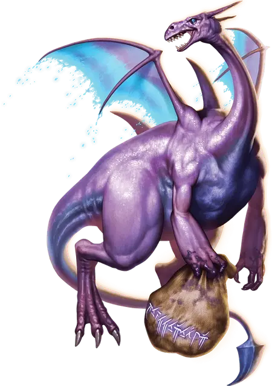

Черничный дракон Шелдон
Sheldon the Blueberry Dragon
Большой Дракон, нейтрально-добрый, именной НИП

Класс Доспеха 16 (природный доспех)
Хиты 142 (15к10 + 60)
Скорость 30 футов, летая 60 футов
| мод | спас | ||
|---|---|---|---|
| СИЛ | 19 | +4 | +4 |
| ЛОВ | 13 | +1 | +4 |
| ТЕЛ | 18 | +4 | +7 |
| мод | спас | ||
|---|---|---|---|
| ИНТ | 17 | +3 | +6 |
| МДР | 14 | +2 | +2 |
| ХАР | 16 | +3 | +3 |
Навыки Акробатика +7, Атлетика +7, Выступление +6
Сопротивление урону психическая энергия, силовое поле
Чувства слепое зрение 30 футов, тёмное зрение 120 футов, пассивное Восприятие 12
Языки Общий, Драконий, Телепатия 120 фт.
Опасность 7 (2900 опыта)
Бонус мастерства +3
Особенности
Обитатель космоса. Шелдон может нормально дышать в вакууме.
Действия
Мультиатака. Шелдон может совершить или две атаки Укусом, две атаки Черничным броском, или по одной каждой.
Укус. Рукопашная атака оружием: +7 к попаданию, досягаемость 5 футов, одна цель. Попадание: 7 (1к6+4) колющего урона плюс 4 (1к8) урона психической энергией.
Черничный бросок. Дальнобойная атака оружием: +7 к попаданию, дистанция 30 футов, одно существо. Попадание: 11 (2к6+4) черничного урона.
Реактивное дыхание (перезарядка 5-6). Шелдон выдыхает линию магического ветра длиной 60 футов и шириной 5 футов. Каждое существо в области должно совершить спасбросок Силы Сл 15. При провале, существо получает 21 (6к6) урона силовым полем, отталкивается от Шелдона на 15 футов и сбивается с ног. При успехе существо получает только половину урона.
Использование заклинаний (Псионика). Шелдон накладывает одно из следующих заклинаний, не нуждаясь в никаких заклинательных компонентах, и Интеллект является для них базовой характеристикой (Сл спасброска от заклинания 14):
• Неограниченно: волшебная рука [mage hand] (рука невидима), свет [light]
• 1/день каждое: переносящая дверь [dimension door], телекинез [telekinesis]
Примечание! Читайте его. Данный монстр, как и остальные, сделаны в рамке extra life в поддержку всякого рода фондам. Идею монстрам давали дети, а Wizards of the Coast придавала им жизнь в формате блоков статистики. Самое главное — всякие странные вещи могут присутствовать, как например черничный урон. Да да, он именно такой у черничного броска, это не ошибка, а задумка авторов. Так что убедительная просьба-не писать комментарии, не слать в ошибки этот момент с черничным уроном.
Бонусные действия
Воздушный рывок (2/день). Шелдон вызывает мощный порыв ветра и летит вплоть до своей скорости. Это перемещение не вызывает провоцированных атак. В конце перемещения, каждое существо в переделах 5 футов от Шелдона должно преуспеть в спасброске Силы Сл 15, иначе будет сбито с ног, когда ветер проносится вокруг Шелдона.
Описание
Шелдон — дружелюбный, добродушный дракон, который собирает и ест чернику. Когда он не посещает вечеринки, он живет в диком космосе. Его тело магически вырабатывает воздух, что позволяет ему существовать в вакууме и создавать мощные порывы ветра. Шелдон использует ветер, чтобы сбивать врагов с ног и продвигаться дальше, чем его крылья могут доставить его сами по себе.